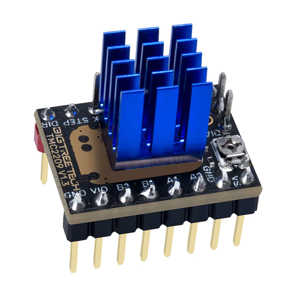

3.5.1. Introduction¶
Afin de piloter les roues des robots, nous avons fait le choix d’opter pour des moteur pas à pas (nema 17 2 phases) ces derniers ont la possibilité d’etre facilement utilisable a partir d’une carte arduino equipper d’un shield pouvant accueilleir jusqu’a 5 drivers de moteur pas à pas, le tout forme ce que l’on appelle une RAMPS c’est un systeme beaucoup utilisé dans le dommaine des imprimante 3D.
{kind=link}
{kind=link}
3.5.2. Pilotage des moteurs¶
Une fois brancher sur une ramps, le nema peuvent facilement etre piloter par l’arduino, le tout est de savoir comment.
{kind=link}
EN : le pin enable permet d’alimenter le moteur, en general un niveau 0 allimentera le moteur et un niveau 1 le coupera
DIR : ce pin permet simplement de definir le sens du moteur selon le niveau logique du pin
STEP : ce pin est le plus important ce dernier va piloter la vitesse de rotation du moteur. a partir de l’envoie d’un signal carre, chaque periode de ce signal permettra d’effectuer un micro pas
MS0, MS1, MS2 : ces pins du drivers vont permettre de choisir le nombre de micro pas a ajouter au nema. le controle du niveau logique de ces dernier ne se fait pas par l’arduino mais mais des cavalier qui se trouve sous chaque drivers. pour savoir le nombre de micro pas choisis il faut se refferer a un tableau qui est propre a chaque drivers. placer un cavalier correspond a un niveau logique 1
A1, A2, B1, B2: sont les sortie, ces pin vont directement piloter le bobinage des nemas.
la solution qui est la plus simple a mettre en oeuvre reste de creer une boucle qui inverse l’etat du pin de sortie celon une certaine periode tel que :
void setup() {
pinMode(13, INPUT);
}
void loop() {
digitalWrite(13, !digitalRead(13));
delayMicroseconds(100);
}
cette methode a l’avantage d’etre tres simple a mettre en oeuvre mais reste tres gourmant en temps pour un microprocesseur. Ainsi cette methode reste tres bien dans le cas du clignotement d’une led a base frequence mais pour genrer un signal carre a haute frequence cela risque de poser probleme. En effet des que l’on ajoute plusieurs moteur avec cette methode, la vitesse maximale pouvant etre atteinte diminue et un programe plus complet penera a effectuer le reste de ces intruction. Par ailleur il n’est pas non plus garanti que le delay soit respecter et la periode de notre signal de sortie risque d’etre fortement impacter
Pour eviter cela il existe une autre solution, l’utilisation des interruptions.
3.5.3. Les interuptions¶
afin de piloter de piloter les moteur de maniere tres precise nous llons donc utiliser les interuptions. les interuptions utilise les timers, ces derniers correspondent a un compteur mais ce dernier a l’avantage de ne pas etre impacter par le niveau d’utilisatyion du proceseur. en d’autre therme, meme si le programme est lourd en calcul, le timer continuera de s’incrementer avec la frequence du processeur.
C’est la que les interuptions interviennent. ce dernier est une fonction qui sera executer au moment un timer aura atteint la valeur voulu. Ainsi, nous allons pouvoir generer un signal carre en inverser l’etat d’un port arduino a chaque fois que le timer atteint la valeur souhaiter, et en faisant varier cette valeur nous allons pouvoir changer la frequence de ce signal carree.
celon les microprocesseur, les timers sont coder sur un certain nombre d’octet, ainsi lors ce que l’on veut se servir d’un timer il faut faire attention a ce que notre periode puisse etre compter. il exsite une solution dans le cas ou la valeur maximale ne peut pas etre atteinte : les prescalaire. il faudra donc attendre qu’un premier registre du timer ateigne la valeur du prescalaire avant d’incrementer de un le registre du timer de l’interuption. nous pouvons ainis compter bien plus loin.
Voici comment mettre en place une interuption sur le timer 3 avec arduino
pinMode(36, OUTPUT); //creation d'un port temoin pour lire le signal
volatile int period = 10000; //creation de la periode variable
void setup() {
noInterrupt(); //desactivation des interruptions le temps de travailler dessus
TCCR3A = 0; //reset du registre A du timer 3
TCCR3B = 0; //reset du registre B du timer 3
TCCR3B |= B00000001; //ecriture dans le registre B du timer 3 pour definir qu'il n'y a pas de prescaler
TCNT3 = 0; //remise a 0 du compteur
OCR3A = period -1; //creation de la valeur de comparaison
TIMSK3 |= (1 << OCIE3A); // on allume l'interuption sur la comparaison du timer
interrupts(); et on fini par ralumer les interuptions
}
//ici la fonction de l'interuption, elle sera executer a chaque fois que la comparaison entre
la valeur de OCR3A et celle du timer sera egale
ISR(TIMER3_COMPA_vect){
digitalWrite(13, !digitalRead(13)); //inversion du pin 13 pour faire tourner le moteur
OCR3A = period-1; // on reetabli la valeur de comparaison par securiter
TCNT3 = 0; //on remet le compteur a 0
}
// la variable period peut etre modifier pendant l'evolution du programme
//cela peut se faire directement dans la boucle loop ou dans une fonction via un message ROS ou serie par exemple.
//cela se fait en inserant le block suivant:
noInterrupts();
period = newval;
OCR3A = period - 1;
interrupts();
il suffit maintenenant de dupliquer la partie presente dans le setup et le l’interruption en ramplacant les 3 par le numero de celui que vous souhaiter utiliser. De cette maniere chaque moteur fonctionera sur son interrution. attention, toute les carte arduino ne possede pas les meme timer dans le cas d’une arduino mega il y a 4 timer 16 bits ainsi le moteur 1er est controler par le timer1, le 2nd par le timer3, le 3eme par le timer4 et enfin le 4eme moteur par le timer5.
3.5.3.1. !!!!!! confli servo.h !!!!!!!¶
la biliotheque servo.h utilise les timer afin de piloter des servomoteurs. a la compilation vous aurez donc une erreur indiquant la sur utilisation d’un vecteur. il est donc neccessaire de modifier la bibliotheque pour que cette derniere n’utilise pas le timer que nous utilisons. Pour cela diriger dans votre dossier d’instalation d’Arduino IDE. pour moi arduino-1.8.19. suivez ensuite le chemin suivant: arduino-1.8.19 > libraries > Servo > src > avr ouvre ensuite le fichier ServoTimers.h, trouvez ensuite les lignes suivantes qui correspondent a votre processeur, ici pour un arduino mega:
// Say which 16 bit timers can be used and in what order
#if defined(__AVR_ATmega1280__) || defined(__AVR_ATmega2560__)
#define _useTimer5
#define _useTimer1
#define _useTimer3
#define _useTimer4
typedef enum { _timer1, _timer3, _timer4, _timer5, _Nbr_16timers } timer16_Sequence_t;
nous allons devoir desactiver l’utilisation de notre timer. pour cela on retire tout simplement ce qui mentionne notre timer 3 tel que: cette action est evidement aplicable pour tout les timer qui devrais etre utiliser par des interuptions
// Say which 16 bit timers can be used and in what order
#if defined(__AVR_ATmega1280__) || defined(__AVR_ATmega2560__)
#define _useTimer5
#define _useTimer1
#define _useTimer4
typedef enum { _timer1, _timer4, _timer5, _Nbr_16timers } timer16_Sequence_t;
nous pouvons maintenant rouvir ArduinoIDE et recompiler sans encombre notre programme
c’est un mecanisme materiel du mp qui permet au peripherique d’indiquer qu’ils ont besoin d’une ressource (delamotte)